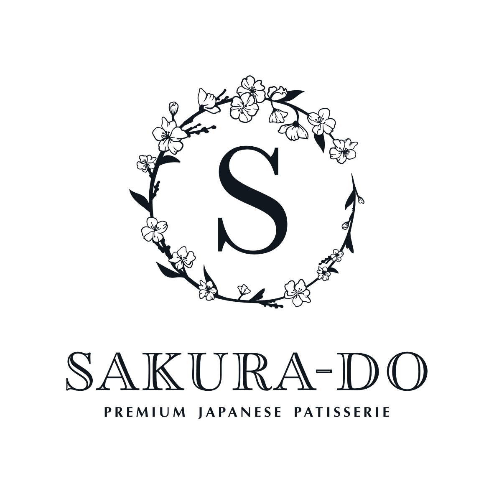
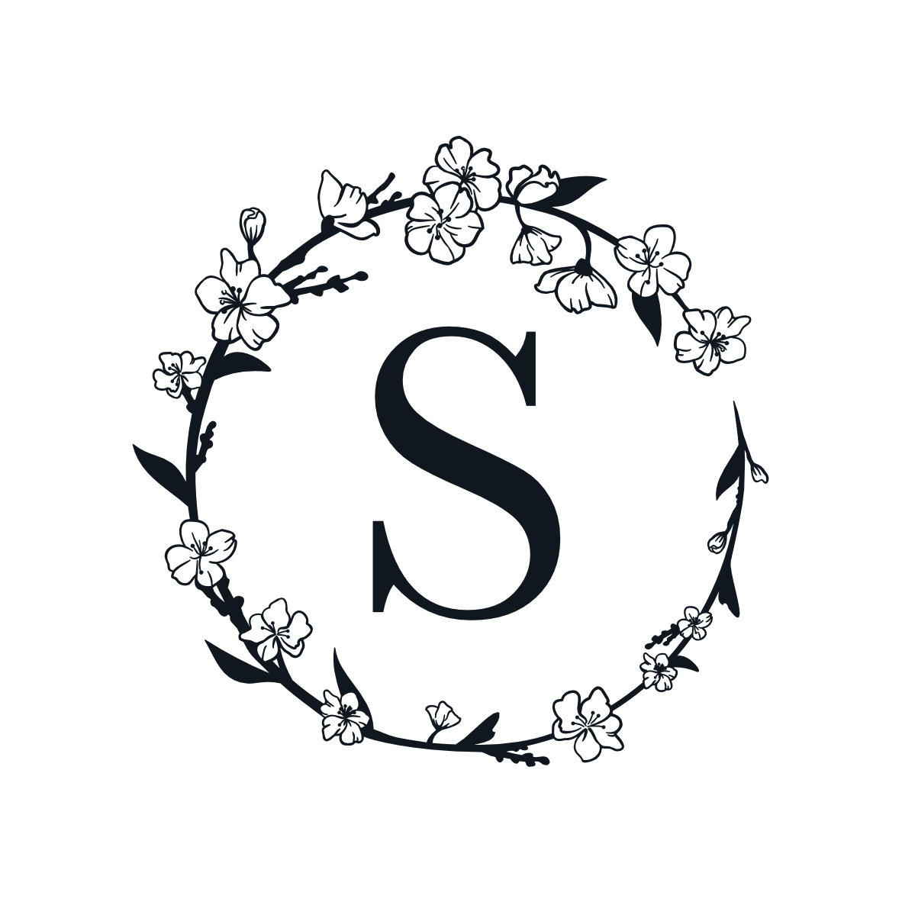

A working document for the people who build Sakurado. A place to find the brand, understand the voice, and use the tools well. Always growing. Always considered.
Editionv1.0 · May 2026
ForInternal team & partners
OwnersMei, Emily & Gabrielle
Welcome
How to use this book.
This is the source of truth for what Sakurado is, how it sounds, how it looks, and how it shows up in the world.
Who this is for
The people who shape Sakurado day to day. The team in the cafés. The kitchen. Our social media manager, photographer, and content creator. Future hires. Suppliers and printers. Anyone writing copy, designing materials, or representing the brand to customers.
How it works
Use the sidebar to navigate. Each section can be read on its own. Start with Foundation if you are new to the brand. Jump to Voice or Visual if you need a specific rule.
How it stays alive
This book is a living document. As the brand grows, so will what is in here. If a rule is missing or no longer fits, raise it with Emily so we can update it properly.
Foundation · The story
Sakurado began with a memory and a missing flavour.
There are two versions of this story. The long version lives here in the brand book and includes the full family history. The web version is shorter and acknowledges co-founder Ernest. Use the right one for the right context.
Sakurado began with a memory and a missing flavour.
In 1993, Mei left China for Japan to study the language. She stayed for five years. She studied, worked, and met her husband. She lived next door to a bakery, and stepped out to the smell of fresh Japanese bread every morning. She fell in love with a country that took dessert as seriously as her grandfather had taken bread. He had run a bakery in China when she was a child, and Mei had grown up among flour, sugar, and the quiet rhythm of a working kitchen. Japan didn't teach her to love sweets. That was already in her. It taught her how they could be made.
What she found there changed how she thought about dessert. Japanese sweets are never too sweet. They're balanced and considered, leaving space for the ingredients to speak. When she returned to the UK, every cake felt sugar-heavy, every dessert too rich. The balance she had come to love simply wasn't here.
So she made it.
Mei founded Sakurado in 2017, beginning quietly out of the back of a fish and chip shop in Putney. She opened the first Sakurado café in Kensington soon after, and the business has since grown to five cafés across London, and a kitchen full of people who share Mei's belief that a good cake is one you finish, not one you push away.
Today, Sakurado is run by Mei alongside her family. Her husband is the financial director. Her daughters Emily and Gabrielle now work in the business too. It is, in every sense, a family-run business, and the philosophy that connects every cake we make is the same one Mei brought back from Tokyo: a dessert should respect the person eating it, not overwhelm them.
The name Sakurado means "house of the cherry blossoms." It is a nod to the Tokyo neighbourhood where Mei lived, where sakura trees lined the river by her home. Hanami, the Japanese tradition of gathering to honour the brief bloom, sits at the heart of the brand.
Sakurado began with a memory and a missing flavour.
In 1993, Mei left China for Japan to study the language. She stayed for five years. She studied, worked, and met her husband. She lived next door to a bakery, and stepped out to the smell of fresh Japanese bread every morning. She fell in love with a country that took dessert as seriously as her grandfather had taken bread. He had run a bakery in China when she was a child, and Mei had grown up among flour, sugar, and the quiet rhythm of a working kitchen. Japan didn't teach her to love sweets. That was already in her. It taught her how they could be made.
What she found there changed how she thought about dessert. Japanese sweets are never too sweet. They're balanced and considered, leaving space for the ingredients to speak. When she returned to the UK, every cake felt sugar-heavy, every dessert too rich. The balance she had come to love simply wasn't here.
So she made it.
Mei founded Sakurado in 2017, beginning quietly out of the back of a fish and chip shop in Putney. She opened the first Sakurado café in Kensington soon after, alongside co-founder Ernest. The business has since grown to five cafés across London, and a kitchen full of people who share Mei's belief that a good cake is one you finish, not one you push away.
The name Sakurado means "house of the cherry blossoms." It is a nod to the Tokyo neighbourhood where Mei lived, where sakura trees lined the river by her home. Hanami, the Japanese tradition of gathering to honour the brief bloom, sits at the heart of the brand.
Sakurado is built on a single quiet philosophy: a dessert should respect the person eating it, not overwhelm them.
Short version · For social bios, packaging, intro lines
Sakurado began with a memory and a missing flavour. A family-run Japanese patisserie founded by Mei in 2017. Made fresh in London. Never too sweet.
One-line version · For ads, headers, brief intros
A family-run Japanese patisserie. Made fresh in London. Never too sweet.
Use the right version
Public-facing communications (website, press releases, journalist interviews, third-party listings) use the web version, which acknowledges co-founder Ernest. Internal materials, team onboarding, brand decks, and any context where the family-run nature is part of the story use the long version. The short and one-line forms work everywhere.
Foundation · Positioning
Premium-but-warm. Approachable luxury.
Sakurado sits in a specific place in the market. Not cold luxury. Not casual high street. Premium-but-warm — refined craft delivered with warmth, intimacy, and the personality of a family-run business.
What this means in practice
Premium brands tend to feel cold and intimidating. Casual brands tend to feel cheap and disposable. Sakurado lives in the rare space where quality and warmth meet.
The reference brands we look to are Aesop, Le Labo, Diptyque, Ffern, and Astrid & Miyu. Each of these brands is unmistakably premium, yet feels human, considered, and inviting. Sakurado belongs in this group.
Our customer
The bullseye Sakurado customer is a 25 to 40 year old professional who treats themselves with intention. They care about quality, beauty, and provenance. They notice the way a cake is presented and the way they feel after eating it. They are the kind of person who would rather have one excellent slice than three average ones.
Around the bullseye sit two important wider audiences: celebration cake customers (birthdays, weddings, baby showers, custom occasions) who come to Sakurado for a piece of memory-worthy craft, and gift-givers who choose Sakurado because the box itself is an experience.
The Japanese sensibility
Japanese desserts hold something European patisserie often does not: balance. They are sweet, but not too sweet. Refined, but not austere. Playful, but not childish. This sensibility runs through every Sakurado product, from the lightest mille crepe to the most decorative bear-shaped choux. Refinement and warmth are not opposites in Japanese culture. They live together.
What makes us different
Never too sweet. A real product truth that customers consistently notice and love. Born of Mei's Japanese training and London discovery.
Made fresh, every day. Mochi made to order. Cakes prepared in our central kitchen. No long-life shelves, no factory production.
Family-run. A mother and her daughters at the centre of the business, with depth of vision and personal care behind every decision.
Range with depth. Five cafés, a thriving celebration cake practice, and a menu that has been refined and curated over years. Jiggly cheesecake, strawberry shortcake, and matcha mille crepe lead our retail bestsellers.
Cultural authenticity. Our products are rooted in real Japanese tradition, not borrowed aesthetic. Sakura. Hanami. Wagashi. Tanuki. We honour what we draw from.
Foundation · Values
Five things we believe.
These are not internal employee values. Those live in the team handbook. These are what Sakurado stands for in the world.
i.
Balance
Not too sweet. Not too heavy. Considered in everything. Restraint is a sign of confidence, not lack.
ii.
Craft
Made by hand. Made fresh. Made by people who care. The work shows in the result, even when nobody is looking.
iii.
Heritage
Rooted in Japan, made in London, run by family. Every cake carries a story. We honour the cultures we draw from.
iv.
Warmth
Premium without being cold. Refined without being distant. We greet every guest like someone we are glad to see.
v.
Joy
A cake should make you smile, even before you eat it. Beauty matters. Delight matters. The little moment of opening the box is part of the gift.
Voice
How Sakurado sounds.
Sakurado writes like a small, considered Japanese patisserie that takes its craft seriously and its customers warmly. We are working towards this voice across the website, social, and packaging. Existing copy will be updated over time to reflect it.
Three voice principles
01. Considered
Every word earns its place. Avoid filler. Avoid clichés. Avoid generic premium language. If a sentence could appear on any other patisserie's website, rewrite it.
02. Warm
Friendly but never overfamiliar. We write the way we would speak to a curious friend who walked into the shop. Premium does not mean distant.
03. Confident
We do not shout, we do not beg, we do not over-explain. If something is beautiful, we describe it once, well. We have an opinion. We are not afraid to express it.
04. Playful
A light playfulness sits underneath the voice. Affectionate, slightly cheeky, never trying too hard. Especially with our cakes that are inherently fun (the bears, the characters, the seasonal pieces).
Tone by context
The voice is not a single fixed register. It adjusts to the product and the moment. A wedding cake calls for restraint and atmosphere. A Bear Custard Choux calls for warmth and small playfulness. The same brand, the same principles, expressed at different volumes.
Context
Tone
Wedding cakes, mille crepes, ceremonial matcha
Restrained, considered, sensorial
Mochi, daily product range, café content
Warm, considered, lightly playful
Character cakes (Totoro, Miffy, Jellycat, bear choux)
Adorable but composed. Charm, not silliness.
Founder voice, story content, newsletter
Personal, reflective, generous
Customer service, replies, comments
Warm, attentive, occasionally witty
Emojis
Emoji usage is at the discretion of the social media manager. Use sparingly and in line with the brand voice. The cherry blossom 🌸 is a recurring brand-aligned choice. Warm tones (orange heart, sun) suit the palette. Otherwise, judgment over rules.
Voice
Words we use.
A working vocabulary that feels Sakurado. Not exhaustive. A reference for what lands.
Quality & craft
Made fresh
Made by hand
Crafted
Refined
Considered
Balanced
Carefully sourced
Fresh, high-quality ingredients
Small batch
Style & feel
Modern
Premium
Family-run
Bespoke
Customisable
Cute
Aesthetic
Beautiful
Quietly
Japanese sensibility
Japanese
Tokyo
Sakura
Hanami
Never too sweet
Light, never heavy
Wagashi
Mochi
Matcha
Texture words for products
Soft
Light
Layered
Delicate
Fluffy
Pillowy
Jiggly (for Japanese cheesecake)
Earthy (for matcha)
Bright
Punctuation
No em-dashes
The em-dash ( — ) is avoided across all Sakurado writing. Use full stops, commas, colons, semicolons, parentheses, or simple line breaks instead.
Exclamation marks, sparingly
No multiple exclamation marks. One only when the moment genuinely calls for it.
Sentence case for body copy
Title Case is reserved for product names. Use italics or weight for emphasis rather than ALL CAPS.
Voice
Show, don't tell.
The voice is easier to feel than describe. These before and afters show what changes when copy gets pulled into the Sakurado tone.
Product description
Not us
Indulge in our delicious Matcha Mille Crepe! A heavenly, decadent treat made with love and the perfect blend of premium matcha. A must-try for matcha lovers!
Us
Layers of delicate crepe and matcha cream, balanced so the matcha leads. Made fresh in our kitchen each morning. Our bestseller for a reason.
Social caption
Not us
OMG our new Matcha Crunch just dropped and it's literally to die for!! Run don't walk to grab one before they sell out!!!
Us
The Matcha Crunch is here. Quietly green, lightly bitter, properly crunchy. Our newest, available across all five cafés.
Newsletter intro
Not us
Hi, we're SO excited to announce our amazing new spring collection, full of delicious treats that are perfect for the season! You're going to love everything we've created!
Us
Spring brings sakura, and sakura brings the collection we look forward to all year. A few new pieces, a few returning favourites. Available from Friday across all our cafés.
Bespoke / wedding enquiry response
Not us
Thank you so much for your enquiry about your special day! We would be absolutely thrilled to create the celebration cake of your dreams! Please send us all your ideas and we will get back to you shortly!
Us
Thank you for the enquiry. We'd love to design something for the wedding. Could you share the date, the venue, and any flavours or styles drawing you in? Once we have a sense of the day, we'll come back with a proposal and a quote.
Voice
Phrases we avoid.
A working list of words and phrases to keep out of Sakurado writing. Some are clichés. Some are AI-generic. Some sound cheap.
Casual / cringe
yummy, delish, scrumptious
divine, heavenly
to die for
OMG
bestie, queen, icon
literally, low-key, slay
mouth-watering
Generic premium clichés
indulge, indulgent
decadent, luxurious, exquisite
treat yourself, you deserve it
pamper, spoil, elevated
crafted with love, made with care
made with passion
the perfect gift, the perfect treat
world-class, best-in-class
AI-generated tells
embark on a journey
discover the world of
a symphony of flavours
a celebration of [anything]
it's not just X, it's Y
whether you're [A] or [B]
look no further
em-dashes ( — )
adjective stacking
Generic food clichés
foodie, foodies
the ultimate, the perfect
game-changer, next-level
a must-try
multiple !!!
ellipses for drama...
ALL CAPS for emphasis
Wedding clichés
your special day
make memories
once-in-a-lifetime
the celebration of your dreams
the cake of your dreams
Use sparingly only
obsessed (only in casual social context)
drool, drooling (only in casual social context)
Voice
The voice translator.
A working library of common phrases reworded into the Sakurado voice. Use as a quick reference.
Product copy
Generic
A delicious, indulgent treat that you'll absolutely love!
Sakurado
A small piece of something we make with care.
Generic
Made with the finest, freshest ingredients sourced from around the world.
Sakurado
Made fresh in our kitchen with ingredients we choose carefully.
Generic
A decadent, rich, creamy, indulgent dessert experience!
Sakurado
Light cream, real fruit, balanced sweetness. The way Mei always intended.
Promotional language
Generic
Treat yourself to our amazing new collection!
Sakurado
Our new collection is here.
Generic
A must-try for any matcha lover!
Sakurado
For people who take their matcha seriously.
Generic
The perfect gift for your loved ones!
Sakurado
A box worth giving.
For longer copy
Write a first draft naturally, then run it against the three principles: Considered. Warm. Confident. Cut anything that doesn't earn its place. Replace any banned phrases. Read it aloud. If it sounds like a brochure, rewrite it.
Translator prompt for AI tools
"Rewrite the following in the Sakurado brand voice: considered (every word earns its place, no clichés or filler), warm (friendly but never overfamiliar), confident (no shouting, no over-explaining, trust the reader). No em-dashes. No exclamation marks unless absolutely necessary. No phrases like 'indulge', 'decadent', 'must-try', 'treat yourself', 'crafted with love', or 'a journey of flavour'. Premium-but-warm Japanese patisserie. Restrained, modern, considered."
Visual
The logos.
Three official logo versions. Each has a job. Use the right one for the context. Never recreate, recolour, or modify.

Full logo
Wordmark with wreath emblem. Use on primary packaging, gift boxes, formal materials, hero brand moments.
Wordmark
Sakura-do with strapline only. Use on website headers, vertical posters, signage, marketing materials with horizontal space.

Emblem
Wreath with S only. Use on social profile pictures, favicons, packaging seals, loyalty programme, small format applications.
The logos shown above are simplified illustrative renderings. Use the official files (linked in the Asset Library) for all real applications.
Logo colour rules
The logo lives in three approved settings: Sakurado Black on cream or white (default), Sakurado Black on Sakurado Orange (for the signature orange gift box and orange brand collateral), and white on dark or photographic backgrounds (commission a clean white version when needed).
Usage rules
Always
Maintain clear space around the logo of at least the height of the "S" character. Use the official files, never recreated or traced. Render at minimum 120px wide on screen, 30mm wide in print.
Never
Stretch, rotate, distort, or skew. Recolour to anything other than approved colours. Place on photographic backgrounds without a panel or solid colour. Recreate or trace from a low-res file. Add effects (drop shadow, glow, outline). Modify the wordmark spacing or proportions.
Visual
The palette.
A warm, considered palette built around cream, terracotta, and a signature orange. Pantone codes are the source of truth for print. Hex codes are their digital expression.
Primary brand colours
Sakurado Cream
Hex #FFFCF7
RGB 255 252 247
Pantone TBD
Sakurado Black
Hex #101820
RGB 16 24 32
Pantone Black 2 C
CMYK 52 91 80 78
Sakurado Orange
Hex #F7902D
RGB 247 144 45
Pantone 7413 C
CMYK 7 57 93 1
Sakurado Terracotta
Hex #7C3A2D
RGB 124 58 45
Pantone TBD
Secondary palette · digital
Gradient and transition tones used on the website and digital materials.
Light Peachy
Hex #FFF4E7
Dark Peachy
Hex #FEDEB5
Medium Peachy
Hex #FCE9CB
Soft Orange
Hex #FDB664
Seasonal accent · Sakura collection
Used for the Sakura collection, cherry blossom moments, and Mother's Day.
Sakura Pink
Hex #F9B5C4
Light Sakura
Hex #F5DADF
How the palette works
Sakurado Cream is the everyday background that gives the brand its warmth. Sakurado Black is the default for body text and the logo. Sakurado Terracotta carries headlines and emphasis. Sakurado Orange is the signature accent, used boldly on the gift box, social profile, and campaign moments, and more sparingly elsewhere as a pop of warmth. The pinks are reserved for Sakura collection moments so they retain seasonal meaning.
Pantones still to define
Pantone references for Sakurado Cream and Sakurado Terracotta are not yet set. When commissioning new print materials in these colours, ask the printer for the closest Pantone match and add it here.
Visual
Typography.
Two typefaces work together across Sakurado. A refined serif carries the moments that need atmosphere. A clean sans-serif handles everything functional.
Web typography · current
The website currently uses these fonts. Keep this in mind when creating any work that needs to match the live site directly.
Display · Playfair Display
Mille Crepes
Used for: page titles and section headlines on the website. A high-contrast serif with editorial character.
Body · Sofia Sans / Sofia Pro
Layers of delicate crepe and matcha cream, balanced so the matcha leads. Made fresh in our kitchen each morning.
Used for: body text, navigation, buttons, prices, all functional UI. Currently set at a light weight; specific font and weight to be confirmed with web developers.
Beyond the website
Social media, packaging, printed collateral, and other surfaces are not bound to the web typography. Typography for these is at the discretion of the designer or content creator working on the project, provided it remains consistent with Sakurado's overall feel: refined, considered, premium-but-warm. The brand voice, colour palette, photography style, and logos remain constant across all surfaces. Typography can flex within that.
A note on consistency
When work needs to live on or alongside the website (banners, web headers, on-site campaigns), use the web typography above so it sits naturally with the site. For everything else, judgment and craft are trusted.
Visual
Photography.
Photography should make you taste through the screen. Eat with your eyes. Texture, light, and intimacy do the work that words cannot.
Four pillars
Product
Hero category. Studio flat-lays and close-ups on warm peach and cream backgrounds. Texture is the subject. Layers, glaze, crumb, condensation. Cross-sections matter. Close enough to almost touch.
The existing Sakurado product photography is strong and should continue. Style: bright, evenly lit, minimal props, controlled colour, accurate rendering of greens (matcha) and pinks (sakura, strawberry) so they look the way they actually do in real life.
People
Mei especially. The team. Customers in the moment. Currently the brand's biggest visual gap. We need a proper portrait of Mei and a small library of her in the kitchen, decorating, talking to customers. Warm, candid, in-context. Never staged or stiff.
A priority: a half-day shoot with Mei across the central kitchen and one of the cafés. Output: hero portrait, B-roll for content, founder shots usable across web, social, and PR.
Place
The cafés. Interiors and key details. Atmospheric over architectural. The counter at golden hour. The cake display. Steam rising from a matcha latte. Hands receiving a takeaway box. Photographs that say "you would want to be here."
Our newest High Street Kensington branch is most on-brand and the natural first focus for shoots. Covent Garden and Gloucester Road are worth capturing too over time, though Gloucester Road tends to be busier inside which makes shooting harder.
Process
The craft. Mochi being made. Cream being whipped. A cake being decorated. The moment of folding chiffon into batter. Currently underused, hugely powerful for the "made fresh, made by hand" story. Anchors the brand in real work.
Process content does double duty. Strong stills for web and social, plus moving footage for reels and TikTok. Plan to capture both whenever a shoot happens.
Photography style
Always
Texture is the hero. Light hits surfaces deliberately. Colours stay true to life. Cross-sections show what's inside. Negative space gives the subject room to breathe. Slight imperfections (crumb, drip, condensation) signal real, fresh, made-by-hand.
Avoid
Phone-shot photography on website or hero placements. Trendy filters that shift hue or wash out warmth. Cluttered backgrounds, busy props, stock-feeling lifestyle shots. Staged "candid" moments. Heavy editing that dates quickly. Black backgrounds. Top-down for everything (mix angles).
Bespoke and celebration cake photography
This category deserves its own treatment. These are not retail products to be flat-laid. They are pieces with presence and scale.
Photograph in context. On a cake stand, at a venue, in soft natural light.
Capture scale. Show what these cakes look like in the room, not just in isolation.
Soft, atmospheric light over hard studio light.
Take phone photos of every bespoke piece before it leaves the kitchen. Use AI editing tools to clean and improve them where useful. A proper shoot is better when possible, but day-to-day phone photography is what builds the library.
Application
Packaging.
Packaging is where Sakurado meets the customer's hands. It is brand and product at once, and one of our strongest assets. Every box should feel like a small gift, even when bought for oneself.
Three packaging tiers
Tier 1 · Master brand packaging
Signature gift boxes, cake boxes, mille crepe boxes. Cream base with Sakurado Black border, the wordmark, and the wreath emblem. Restrained, ownable, immediately recognisable.
Designed for specific products with their own visual treatment. Each follows brand consistency rules (logo always in Sakurado Black, wordmark or emblem present, type system honoured) but uses a colour palette appropriate to the product.
Examples: Matcha Crunch (Pantone 7735 C deep green with gold foil). Cheesecake boxes (Pantone P 17-2 U / P 99-8 U / P 179-2 U).
Tier 3 · Cultural / storytelling packaging
For products with a clear cultural or narrative hook. Layers in Japanese cultural context, characters, language, or folklore. Most adventurous tier visually, but always grounded in real meaning, never decorative borrowing.
Example: Tanuki Treats (orange + navy + brown, with Japanese folklore copy and the tanuki character illustration).
Packaging principles
Always
The logo appears on every Sakurado package. Sakura-do (with hyphen) is the form used on packaging. Material quality matters. Boxes should feel substantial, never flimsy. Internal details (tissue paper, stickers, thank-you notes) are part of the experience.
Avoid
Plain unbranded boxes for paid products. Mismatched colour palettes that don't fit one of the three tiers. Logo-free secondary packaging for premium items. Material downgrades that compromise the unboxing moment.
Application
The in-store experience.
The cafés are where most customers meet Sakurado. The brand should be felt the moment someone steps inside, before they have ordered anything.
Greeting · "Irrasshaimase"
Every customer who walks into a Sakurado café is greeted with "irrasshaimase" (or the shortened "irrashai"). This is a Japanese custom of welcome, used in shops, restaurants, and cafés across Japan. It tells the customer: you are seen, you are welcome, you have entered somewhere that takes hospitality seriously.
This is a small detail that does enormous brand work. It signals authenticity, warmth, and care. It is non-negotiable. Every staff member, every shift, every customer.
For new staff
"Irrasshaimase" is pronounced ee-rah-shai-mah-seh. The short form "irrashai" is ee-rah-shai. New staff should be coached on the pronunciation and the warmth behind it. It is a greeting, not a script. Said with eye contact and a small smile, not chanted automatically.
Display
The cake counter is the visual heart of every café. It should always look full, fresh, and beautifully arranged. Keep counters as bare as possible so the cakes themselves are the focus. Minimise plastic signs, paper notices, and clutter. Where signage is needed, it should be considered and on-brand. A half-empty or visually busy counter undermines the brand promise of fresh and abundant.
Atmosphere
Music. A chilled café playlist that suits premium-but-warm. Quiet enough not to compete with conversation.
Scent. The café should smell of what is being made: cake, sugar, matcha, coffee. No artificial scents. The kitchen smells are the right brand smells.
Tableware. Where ceramics are used in-store, they should match the brand aesthetic. Considered, refined, never disposable-looking.
Application
Naming & conventions.
Small details that, when consistent, make the brand feel disciplined.
Running text. Body copy, captions, navigation, story, product descriptions, emails.
Mei in writing
First mention in standalone content
"our founder Mei"
Subsequent mentions
"Mei"
Personal/founder voice content
"Mei" from the start
Surname
First name only across all customer-facing content. Mei Xu when a full name is required (press, formal bios, legal contexts).
Café locations
Sakurado has five cafés across London. Each can be referred to formally or casually depending on the context.
Formal name
Casual reference
Sakurado Soho
our Soho café
Sakurado Covent Garden
our Covent Garden café
Sakurado Gloucester Road
our Gloucester Road café
Sakurado High Street Kensington
our High Street Kensington café
Sakurado Vauxhall
our Vauxhall café
Use formal names for navigation, location lists, addresses, and structured information. Use casual references in flowing prose, social posts, and conversational copy.
Internally we refer to branches by initials: SSA (Soho), CG (Covent Garden), HSK (High Street Kensington), GR (Gloucester Road), VXL (Vauxhall). Useful in operational contexts and team communications.
Use "café" as the default term in customer-facing copy (warm and accessible). Use "patisserie" occasionally for variation or when a more refined register is wanted. Use "branch" or "location" in operational and structured contexts. Avoid "store" and "outlet" — they're the wrong category for what we are.
Product names
When the product is the subject
Title Case ("Matcha Mille Crepe", "Bear Custard Choux")
In flowing prose
Lowercase ("she's known for her matcha mille crepes")
Japanese characters
The Japanese characters さくら堂 (Sakurado) appear on storefront fascias and may be used as a decorative or cultural detail elsewhere (packaging interiors, seasonal collateral). Never use them as primary identification.
Application
Brand lines.
Sakurado does not have a single tagline. Instead, a vocabulary of recurring brand lines, each suited to a different context. Used together over time, they build the brand voice without locking into one slogan.
"A patisserie of balance."
Use for: About page intros, brand book covers, press, stationery, formal positioning. The most considered, atmospheric line.
"Never too sweet."
Use for: Recurring brand truth. Packaging, social bios, occasional copy moments, signage. A signature phrase that should appear often enough to become recognisable, without being on everything.
"Made fresh in London. Never too sweet."
Use for: Short brand introduction. Social bios, ad copy, listings, places where one line has to do positioning work.
"A family-run Japanese patisserie."
Use for: Functional descriptor. Press releases, business listings, formal "about" lines.
"House of cherry blossoms."
Use for: Atmospheric, poetic moments. Sakura collection, story content, the deepest expression of the brand.
Resources
Asset library.
The files everyone needs in one place. Logos, photography, press materials. Hosted in a shared folder linked below.
How this works
Brand files live in a shared cloud folder (Google Drive or Dropbox), not inside this brand book itself. To set this up: create a "Sakurado Brand Assets" folder, upload the files listed below, set sharing to "Anyone with the link can view," and replace the link placeholders below with the real folder URLs.
Anyone you give the brand book to can then click straight through to download what they need.
All hex codes, Pantone references, and CMYK values are documented in the Colour section above. Designers and printers can copy them directly. No separate file needed at this stage.
Typography
Web fonts
Playfair Display and Sofia Sans (or Sofia Pro, to confirm with web team) are the current web fonts. Both available via Google Fonts. Designers can grab them directly when needed.
Press kit · to develop
Sakurado one-pager
A short PDF for press enquiries with founder story, key brand facts, hero photography, and contact details. To be created.
Founder bio · Mei Xu
A short formal biography of Mei Xu for press, awards submissions, speaker introductions. To be drafted.
Photography library · to build
Hero portrait · Mei
First priority shoot. To be commissioned.
Café interiors
Each café, starting with High Street Kensington. To be commissioned over the next quarter.
Bespoke / wedding portfolio
Curated selection of standout celebration cakes from past commissions. To be selected and uploaded.
How to update this brand book
This is a single HTML file that opens in any browser. To make small text edits, open the file in any text editor (VS Code, TextEdit in plain text mode, or even Notes), find the text you want to change, edit, save, and reload in your browser. For larger structural changes, ask Emily.
Version note
This is v1.0, built in May 2026. It captures the brand strategy, voice, visual identity, and application guidelines as of this date. As Sakurado evolves, so will this document.